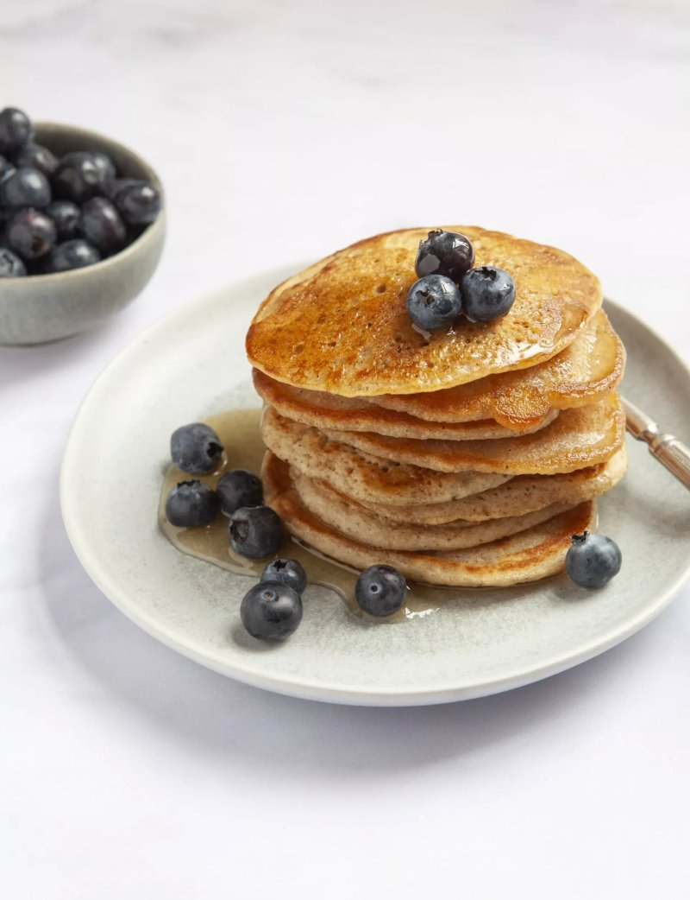

American-style pancakes

Tasty Pancakes
You're going to love the Hairy Bikers' American-style vegan pancakes. These tasty pancakes are cheap and easy to whip up, taking just 15 minutes to make and use common ingredients found in your store cupboard. Different to your regular pancake recipe, these vegan pancakes are egg-free and use plant based milk to deliver the tasty results. And it's the added pinch of cinnamon which really gives them their flavour. We've used oat milk, but almond and coconut milk will also work here. Serve warm with fresh berries and a drizzle of maple syrup.
Ingredients
For the pancakes:
- 200g plain flour (or spelt or wholemeal)
- 2 tsp baking powder
- ½ tsp bicarbonate of soda
- ½ tsp ground cinnamon
- 1 tsp mixed spice
- 2 tbsp caster sugar
- pinch of salt
- 300ml plant-based milk
- 1 tbsp apple cider vinegar or lemon juice
- coconut oil
To serve:
- maple syrup
- fresh berries
Steps
- Mix the flour with the baking powder, bicarbonate of soda, spices and sugar in a large bowl. Stir in a generous pinch of salt. Mix the milk with the vinegar and stir – it should thicken slightly. Pour the wet ingredients into the dry and combine but try to keep mixing to a minimum.
- Heat a tablespoon of coconut oil in a non-stick frying pan or a cast-iron pan, pour it into the batter and stir.
- Add some more coconut oil to the pan. Keep the heat at medium to high and spoon 4 small ladlefuls of batter on to the pan, making sure they are well spaced out. When they look set around the edges and large bubbles have appeared, carefully flip one of them over. If it is a deep brown, flip the rest and cook on the reverse side for another minute. Remove and set aside while you cook the rest of the pancakes in the same way.
- Continue until you have used up all the batter, adding a little more oil to the pan each time. Serve with plenty of maple syrup and some seasonal berries.